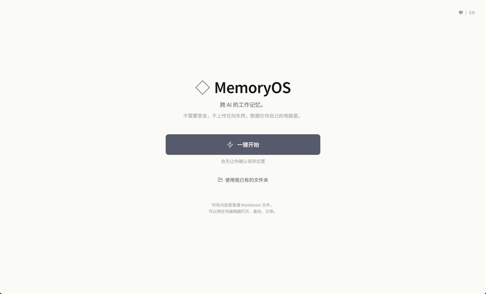
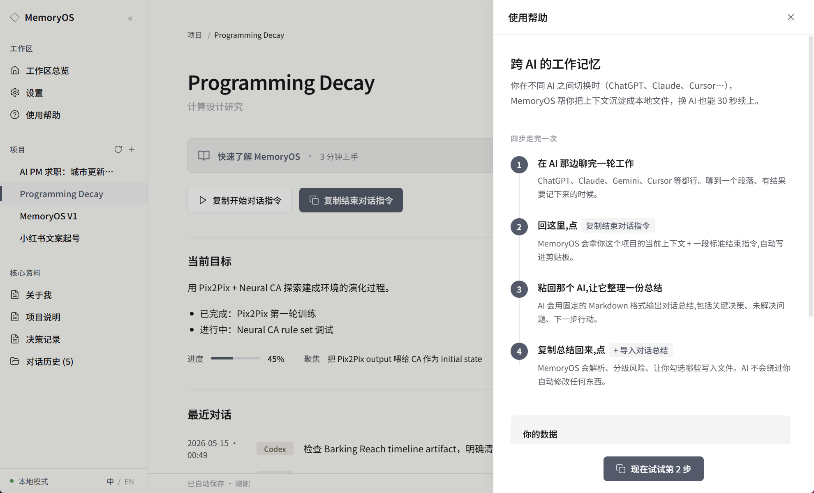

The real problem sits one level above the tool-switch annoyance: people now rely on multiple AIs precisely because each is good at different things, but those AIs share no memory, so the collaboration never compounds. Several routes could close this gap — unified clients, API integrations, cloud sync. MemoryOS takes one of them: a shared memory layer that ends a session by writing down the key points, and carries them into the next session in any tool. The bet is on which route, not just the feature.
Once the memory-layer route was chosen, two decisions defined its shape: (1) the memory file lives on the user's own machine, not in any vendor account — nobody wants their notes scattered across different companies' servers; (2) the AI drafts updates but the user approves every single write — trust collapses the moment an AI silently edits your notes. Designed, built and shipped end-to-end by one person; the case study unpacks all five decisions and what kind of user feedback would disprove them.
真正的问题在"换工具麻烦"之上一层：人们之所以依赖多个 AI，正是因为它们各有所长，但这些 AI 之间没有共享记忆，协作因此无法累积。弥补这个断层有好几条路——统一客户端、API 集成、云端同步。MemoryOS 选了其中一条：一个共享记忆层，结束对话时把要点写下来，下一段对话无论在哪个 AI 里都能带回去。赌的是"选哪条路"，不只是某个功能。
选定记忆层这条路之后，两个关键决策定义了它的形态：(1) 记忆文件存在用户自己的电脑里，不在任何厂商的云账户上——没人愿意自己的笔记散落在不同公司的服务器；(2) AI 起草更新但每一次写入都由用户确认——AI 一旦悄悄改了你的笔记，信任就崩了。整套产品定义、设计、工程都是一个人完成的；Case Study 完整拆解 5 个核心决策，以及"什么样的用户反馈会推翻这些判断"。